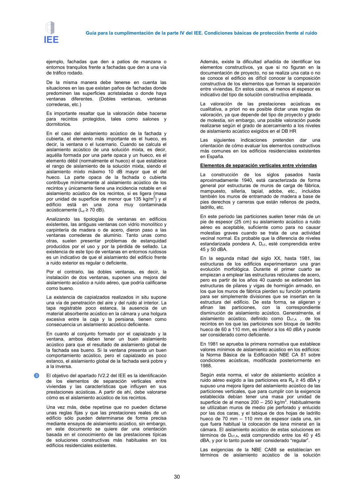

GUIA · Página 30 · versión 2016-11-01
SHA256: 813669d3066c0ff79457d57b80b0512a4fbb248bc5db1f7baf473c369a064738 · página física 30 de 65 · métodos de encabezado
solo si están cotejados.
Formatos: Markdown · JSON de bloques · PDF p. 30 · imagen PNG
Guía para la cumplimentación de la parte IV del IEE. Condiciones básicas de protección frente al ruido 30 ejemplo, fachadas que den a patios de manzana o entornos tranquilos frente a fachadas que den a una vía de tráfico rodado. De la misma manera debe tenerse en cuenta las situaciones en las que existan paños de fachadas donde predominen las superficies acristaladas o donde haya ventanas diferentes. (Dobles ventanas, ventanas correderas, etc.) Es importante resaltar que la valoración debe hacerse para recintos protegidos, tales como salones y dormitorios. En el caso del aislamiento acústico de la fachada y cubierta, el elemento más importante es el hueco, es decir, la ventana o el lucernario. Cuando se calcula el aislamiento acústico de una solución mixta, es decir, aquélla formada por una parte opaca y un hueco, es el elemento débil (normalmente el hueco) el que establece el rango de aislamiento de la solución mixta, siendo el aislamiento mixto máximo 10 dB mayor que el del hueco. La parte opaca de la fachada o cubierta contribuye mínimamente al aislamiento acústico de los recintos y únicamente tiene una incidencia notable en el aislamiento acústico de los recintos, si es ligera (masa por unidad de superficie de menor que 135 kg/m2) y el edificio está en una zona muy contaminada acústicamente (Ld ≥ 70 dB). Analizando las tipologías de ventanas en edificios existentes, las antiguas ventanas con vidrio monolítico y carpintería de madera o de acero, dieron paso a las ventanas correderas de aluminio. Tanto unas como otras, suelen presentar problemas de estanquidad producidos por el uso y por la pérdida de sellado. La existencia de este tipo de ventanas en entornos ruidosos es un indicativo de que el aislamiento del edificio frente a ruido exterior es regular o deficiente. Por el contrario, las dobles ventanas, es decir, la instalación de dos ventanas, suponen una mejora del aislamiento acústico a ruido aéreo, que podría calificarse como bueno. La existencia de capialzados realizados in situ supone una vía de penetración del aire y del ruido al interior. La tapa registrable poco estanca, la ausencia de un material absorbente acústico en la cámara y una holgura excesiva entre la caja y la persiana, tienen como consecuencia un aislamiento acústico deficiente. En cuanto al conjunto formado por el capialzado y la ventana, ambos deben tener un buen aislamiento acústico para que el resultado de aislamiento global de la fachada sea bueno. Si la ventana presenta un buen comportamiento acústico, pero el capialzado es poco estanco, el aislamiento global de la fachada será pobre y a la inversa. ❸ El objetivo del apartado IV2.2 del IEE es la identificación de los elementos de separación verticales entre viviendas y las características que influyen en sus prestaciones acústicas. A partir de ahí, debe valorarse cómo es el aislamiento acústico de los recintos. Una vez más, debe repetirse que no pueden dictarse unas reglas fijas y que las prestaciones reales de un edificio sólo pueden determinarse de forma precisa mediante ensayos de aislamiento acústico, sin embargo, en este documento se quiere dar una orientación basada en el conocimiento de las prestaciones típicas de soluciones constructivas más habituales en los edificios residenciales existentes. Además, existe la dificultad añadida de identificar los elementos constructivos, ya que si no figuran en la documentación de proyecto, no se realiza una cata o no se conoce el edificio es difícil conocer la composición constructiva de los elementos que forman la separación entre viviendas. En estos casos, al menos el espesor es indicativo del tipo de solución constructiva empleada. La valoración de las prestaciones acústicas es cualitativa, a priori no es posible dictar unas reglas de valoración, ya que depende del tipo de proyecto y grado de molestia, sin embargo, una posible valoración puede realizarse según el grado de acercamiento a los niveles de aislamiento acústico exigidos en el DB HR Las siguientes indicaciones pretenden dar una orientación de cómo evaluar los elementos constructivos más comunes en los edificios residenciales existentes en España. Elementos de separación verticales entre viviendas La construcción de los siglos pasados hasta aproximadamente 1940, está caracterizada de forma general por estructuras de muros de carga de fábrica, mampuesto, sillería, tapial, adobe, etc., incluidos también los muros de entramado de madera a base de pies derechos y carreras que están rellenos de piedra, ladrillo, etc. En este periodo las particiones suelen tener más de un pie de espesor (25 cm) su aislamiento acústico a ruido aéreo es aceptable, suficiente como para no causar molestias graves cuando se trata de una actividad vecinal normal. Es probable que la diferencia de niveles estandarizada pondera A, DnT, esté comprendida entre 45 y 50 dBA. En la segunda mitad del siglo XX, hasta 1981, las estructuras de los edificios experimentaron una gran evolución morfológica. Durante el primer cuarto se empiezan a emplear las estructuras reticulares de acero, pero es partir de los años 40 cuando se extienden las estructuras de pilares y vigas de hormigón armado, en los que los muros de fábrica pierden su función portante para ser simplemente divisiones que se insertan en la estructura del edificio. De esta forma, se aligeran y afinan las particiones, con la correspondiente disminución de aislamiento acústico. Generalmente, el aislamiento acústico, definido como DnT,A , de los recintos en los que las particiones son bloque de ladrillo hueco de 60 a 110 mm, es inferior a los 40 dBA y puede ser considerado como deficiente. En 1981 se aprueba la primera normativa que establece valores mínimos de aislamiento acústico en los edificios: la Norma Básica de la Edificación NBE CA 81 sobre condiciones acústicas, modificada posteriormente en 1988. Según esta norma, el valor de aislamiento acústico a ruido aéreo exigido a las particiones era RA ≥ 45 dBA y supuso una mejora ligera del aislamiento acústico de las particiones verticales, que para cumplir con la exigencia establecida debían tener una masa por unidad de superficie de al menos 200 – 250 kg/m2. Habitualmente se utilizaban muros de medio pie perforado y enlucido por las dos caras, y el tabique de dos hojas de ladrillo hueco de 70 mm – 110 mm de espesor cada una, sin que fuera habitual la colocación de lana mineral en la cámara. El aislamiento acústico de estas soluciones en términos de DnT,A, está comprendido entre los 40 y 45 dBA, y por lo tanto puede ser considerado “regular”. Las exigencias de la NBE CA88 se establecían en términos de aislamiento acústico de la solución
